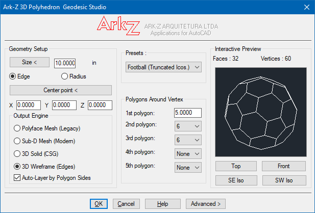
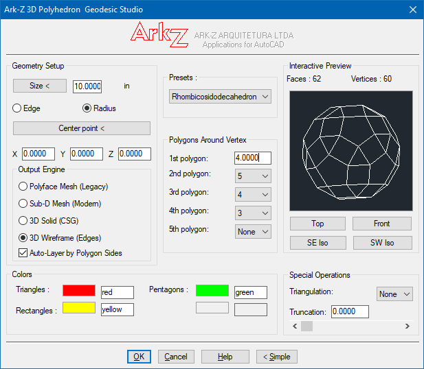
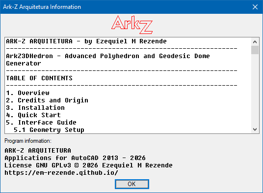

Advanced Polyhedron & Geodesic Dome Generator — Version 3.2
Based on the original code by 'Petri Leskinen' (2000). Development, updates, and 3D Wireframe support by ARK-Z Arquitetura.
ArkZ3DHedron Studio is an advanced parametric tool developed in AutoLISP and DCL for AutoCAD. It allows you to create, preview, and generate complex polyhedra (Platonic, Archimedean, Catalan solids) and Geodesic Domes directly within the CAD 3D environment.

The plugin features its own vector rendering engine for real-time visualization, with support for hidden-line removal (backface culling) and colored shading.
It exports geometry to multiple formats: legacy polyface meshes, modern Sub-D meshes, true 3D solids via CSG operations, and closed 3D polylines per face.
All settings — size, draw mode, auto-layer, edge/radius toggle, and truncation — are automatically persisted between AutoCAD sessions.
Choose how the geometry will be constructed inside the drawing:
PFACE entities. Lightweight and compatible with older AutoCAD versions and third-party software.MESH entities. Ideal for applying mesh smoothing for organic modeling.3DSOLID object. Starts from a solid block and applies slicing planes (SLICE) on the calculated faces.3DPOLY for each face. Ideal for structural detailing, center axes, or templates.3D_POLY_3SIDES, 3D_POLY_5SIDES, etc.).Built-in presets cover the most important families of convex polyhedra:
| Family | Presets |
|---|---|
| Platonic Solids | Tetrahedron, Cube, Octahedron, Dodecahedron, Icosahedron. |
| Archimedean Solids | Cuboctahedron, Rhombicuboctahedron, Rhombicosidodecahedron, Truncated Icosahedron ("Soccer Ball"). |
| Catalan Solids | Rhombic Dodecahedron, Rhombic Triacontahedron, Tetrakis Hexahedron. |
| Geodesic Domes | 1V, 2V and 3V frequencies based on spherical projection. |
| Custom | Free assembly by defining the polygons around each vertex. |

Click the Advanced > button to access the special controls:
At 0.0 no truncation is applied. Between 0.0 and 0.5 vertices and edges are progressively cut. At 0.5 a full rectification is applied. Above 0.5 dualization is applied, producing the dual polyhedron.
ArkZ3DHedron.lsp, ArkZ3DHedron.dcl, and ArkZ3DHedron.txt.APPLOAD command.ArkZ3DHedron.lsp and click Load.acaddoc.lsp for automatic loading.Type the main command at the AutoCAD command line:
The dialog interface (DCL) will be displayed, allowing you to configure parameters and preview the polyhedron before generation.
| Parameter | Description |
|---|---|
| Size | Defines the base size of the geometry. Can be typed or picked on screen using the Size < button. |
| Edge / Radius | Toggles whether the size value refers to the polygon edge or the circumscribed sphere radius. |
| Center Point (X, Y, Z) | Defines the 3D insertion coordinate for the polyhedron center. Can be picked on screen using the Center point < button. |
Select a pre-configured polyhedron from the Presets list, or build your own
topology by filling the Polygons Around Vertex box with the side counts of the
polygons meeting at each vertex (e.g., 3, 3, 3 for a Tetrahedron;
3, 4, 3, 4 for a Cuboctahedron).
INSUNITS variable (mm, cm, m, inches, feet).ArkZ3DHedron.txt in the support paths.
The DCL file must be in the support paths. Missing files trigger an alert and the program exits silently.
| Problem | Solution |
|---|---|
Command ArkZ3DHedron not recognized. |
Run APPLOAD and load ArkZ3DHedron.lsp. Confirm the success message. |
| "File 'ArkZ3DHedron.dcl' was not found..." | Copy the DCL file to a folder in the AutoCAD support paths. |
| "Could not load the ArkZ3DHedron.dcl dialog box." | Verify that the DCL file is complete and unmodified. |
| The Help dialog does not open. | Ensure ArkZ3DHedron.txt is present in the support paths. |
| "Illegal polyhedron" is displayed. | Check the angle sum around the vertex. It must be strictly less than 360 degrees. |
| Logo and separator images do not appear. | The ArkZ3DHedron.slb slide library must be present. |
| Generated polyhedron appears at the wrong scale. | Check the Edge/Radius toggle setting. |
| 3D Solid generation is very slow. | Use Polyface Mesh, Sub-D Mesh, or 3D Wireframe for complex shapes. |
Based on the original 3Dhedron.lsp routine by Petri Leskinen (2000).
Code released for free use and modification in architectural, engineering, and 3D modeling projects.
License: GNU GPLv3
Copyright (C) 2026 Ezequiel M Rezende
This program is free software: you can redistribute it and/or modify it under the terms of the GNU General Public License as published by the Free Software Foundation, either version 3 of the License, or (at your option) any later version.

.